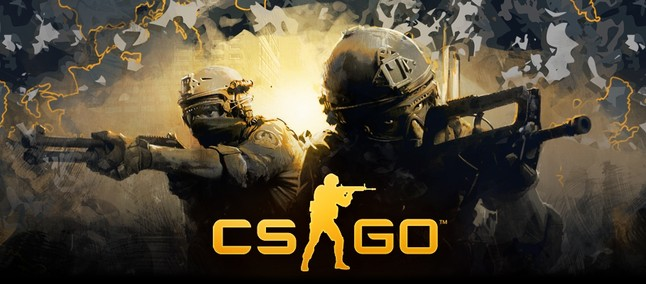

Um pouco sobre mim
teste
Meus gostos musicais
Como preferência eu escolhi como cantora/cantor preferido o rapper Tupac Shakur
Um pouco sobre Tupac
Tupac Amaru Shakur (1971-1996), conhecido por “2Pac” ou “Pac”, nasceu no bairro de East Harlen, Manhattan, Nova Iorque, Estados Unidos.
Além de sua carreira no rap, foi um ator bastante promissor e um ativista social. Grande parte dos sons de Shakur falavam sobre crescer no meio da violência e miséria dos guetos, racismo, outros problemas sociais e de conflitos com outros rappers durante a lendária rivalidade entre as costas leste e oeste.
Meus jogos
Minha preferência são os seguintes jogos:
| FIFA |  |
| NBA2K |  |
| Counter Strike: Global Offensive |  |
| Assassin's Creed |  |
Meus filmes
Esses são os filmes que mais me agradaram
| Filmes | Trilogia |
|---|---|
| Velozes e Furiosos |
|
| Harry Potter |
|
| Divergente |
|
Outros Filmes
| Amanhecer Violento |
| Coach Carter |
| Meu Nome é Radio |
| Sempre ao Seu Lado |
| Creed |
| Star Wars |
Esportes
- Futebol
- Basquete
- Boxe
Hobbies e Passatempos
- Tocar violão e pandeiro
- Jogar Basquete
- Assistir filmes e séries
- Jogar vídeo-game